<!DOCTYPE lake>
<p data-lake-id="u49cd957f" id="u49cd957f"><a data-lake-id="u9808719f" href="https://item.szlcsc.com/21952830.html" id="u9808719f" rel="noopener noreferrer" target="_blank"><span data-lake-id="u5091271a" id="u5091271a">https://item.szlcsc.com/21952830.html</span></a></p><p data-lake-id="ud9e69e90" id="ud9e69e90"><a data-lake-id="u3810657c" href="https://lckfb.com/project/detail/lckfb-lspi-skystar-gd32f407vet6-lite?param=baseInfo" id="u3810657c" rel="noopener noreferrer" target="_blank"><span data-lake-id="u15f2d010" id="u15f2d010">立创·天空星GD32F407VET6开发板-青春版</span></a></p><h2 data-lake-id="Mk3Qt" id="Mk3Qt"><span data-lake-id="uede3243e" id="uede3243e">设备清单</span></h2><ol list="u02bae0c4"><li data-lake-id="u54efcbc5" fid="u639f2c88" id="u54efcbc5"><span data-lake-id="u1812ce20" id="u1812ce20">天空星GD32F407VET6开发板一块</span></li></ol><ol list="ue3d9b35f" start="2"><li data-lake-id="u8cecb2c9" fid="ue7491c9c" id="u8cecb2c9"><span data-lake-id="u8d68de1b" id="u8d68de1b">6Pin烧录线一条</span></li><li data-lake-id="uc799d28a" fid="ue7491c9c" id="uc799d28a"><span data-lake-id="u8a2f054b" id="u8a2f054b">DAPLink烧录器一个</span></li><li data-lake-id="udc307213" fid="ue7491c9c" id="udc307213"><span data-lake-id="ubcb234ea" id="ubcb234ea">2x20Pin排针两组</span></li><li data-lake-id="u1b2cf0cf" fid="ue7491c9c" id="u1b2cf0cf"><span data-lake-id="ubc9ad8e9" id="ubc9ad8e9">2x5Pin排针一组</span></li></ol><p data-lake-id="ub584759a" id="ub584759a"><span data-lake-id="u8319ae88" id="u8319ae88">最终连接效果</span></p><p data-lake-id="u8a00fc63" id="u8a00fc63"><span data-lake-id="ud3e9229b" id="ud3e9229b">版本1：</span></p><p data-lake-id="u596be6ae" id="u596be6ae">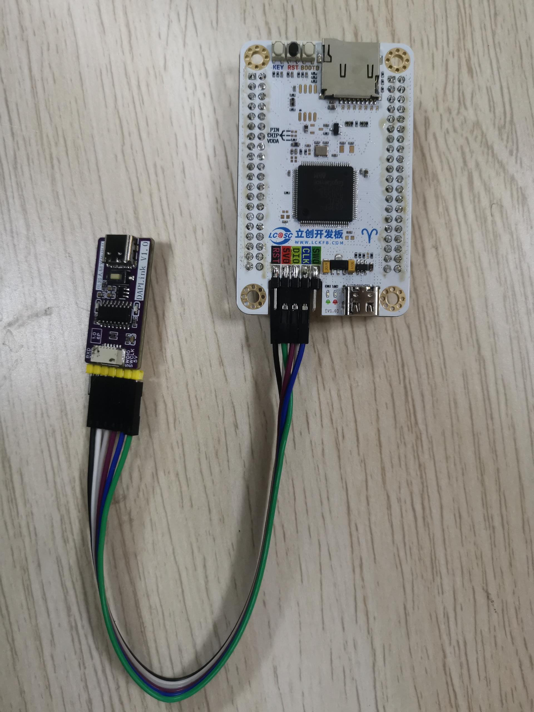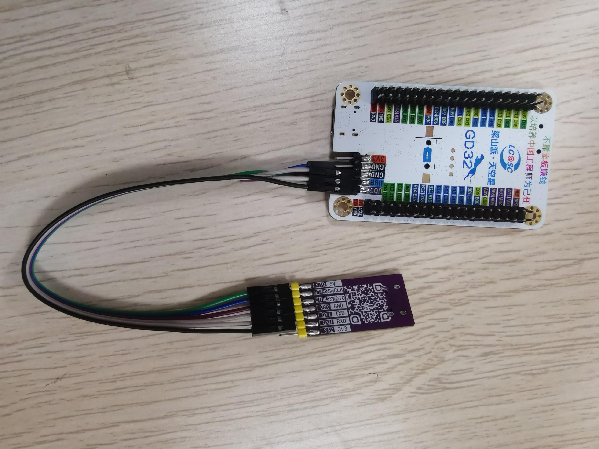</p><h2 data-lake-id="o7MBT" id="o7MBT"><span data-lake-id="ue3f8115d" id="ue3f8115d">焊接</span></h2><h3 data-lake-id="Xifc8" id="Xifc8"><span data-lake-id="u7d822199" id="u7d822199">天空星两侧排针</span></h3><p data-lake-id="u9c7139e8" id="u9c7139e8"><span data-lake-id="ue87d8dfb" id="ue87d8dfb">两组排针焊接到开发板的背面。</span></p><p data-lake-id="u4eca48d8" id="u4eca48d8"><br/></p><p data-lake-id="uea6d1f4b" id="uea6d1f4b">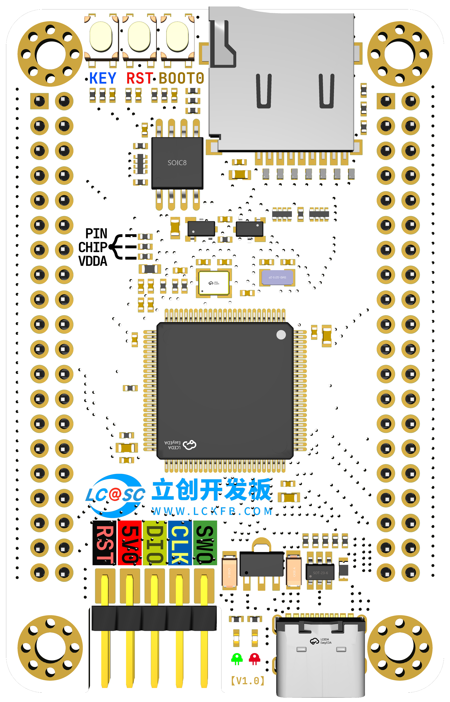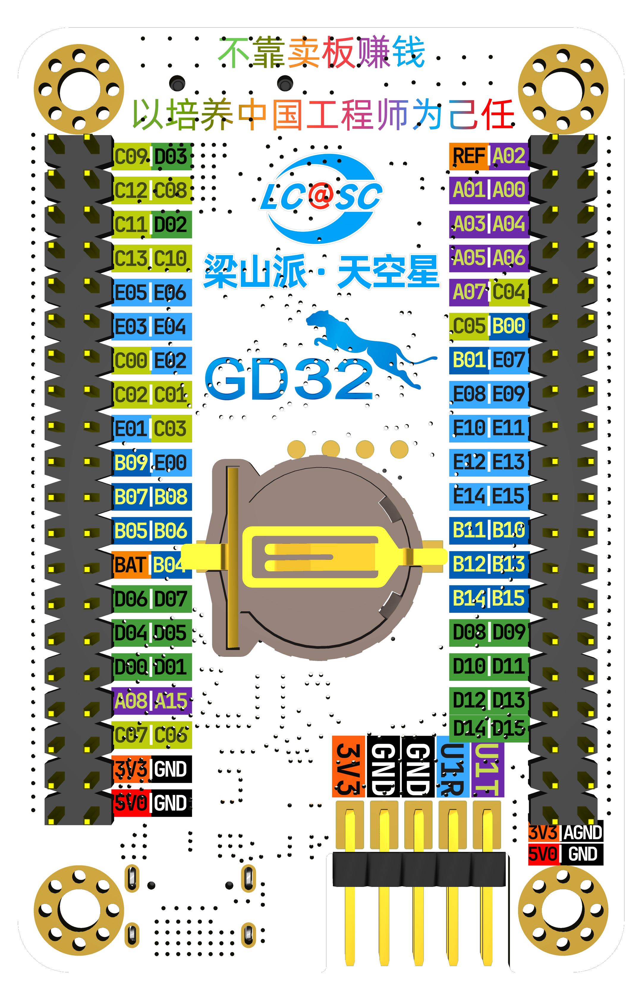</p><p data-lake-id="u8ee391c1" id="u8ee391c1"><span data-lake-id="u54d9585e" id="u54d9585e">如上图，</span><strong><span data-lake-id="u6b9e8756" id="u6b9e8756">左边是正面</span></strong><span data-lake-id="u5a26731d" id="u5a26731d">，</span><strong><span data-lake-id="uaecb87c9" id="uaecb87c9">右边是反面</span></strong><span data-lake-id="uc537648e" id="uc537648e">。</span></p><p data-lake-id="ua763ace8" id="ua763ace8"><strong><span class="lake-fontsize-14" data-lake-id="u70bfb746" id="u70bfb746">仔细观察上图，</span></strong><strong><span class="lake-fontsize-18" data-lake-id="ua8ee00fe" id="ua8ee00fe" style="color: #DF2A3F">排针黑色胶皮在背面</span></strong><strong><span class="lake-fontsize-14" data-lake-id="u943b72d3" id="u943b72d3">，不要</span></strong><strong><span class="lake-fontsize-18" data-lake-id="u4e91223b" id="u4e91223b">焊错了</span></strong><strong><span class="lake-fontsize-14" data-lake-id="ueae5bc8c" id="ueae5bc8c">! 不然要遭老罪了。</span></strong></p><h3 data-lake-id="NmnxI" id="NmnxI"><span data-lake-id="uae94a7d2" id="uae94a7d2">天空星烧录接口焊接</span></h3><a class="yuque-card-link" href="https://cdn.nlark.com/yuque/0/2024/jpeg/27903758/1716622641153-e929b934-85af-4362-ae6a-672a8ab0be7d.jpeg" rel="noopener noreferrer" target="_blank">board：board</a><h3 data-lake-id="Rr0YD" id="Rr0YD"><span data-lake-id="u7d37100a" id="u7d37100a">烧录器排针焊接</span></h3><p data-lake-id="u2215cab8" id="u2215cab8">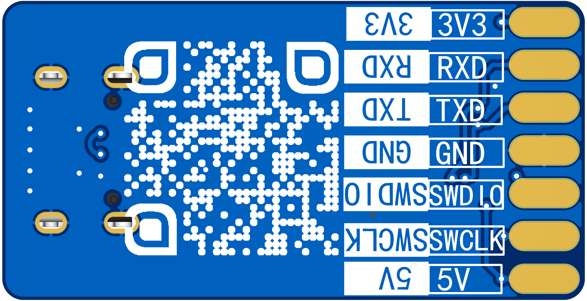</p><p data-lake-id="u68db9b4c" id="u68db9b4c"><span data-lake-id="u5f9a89f0" id="u5f9a89f0">背面7个焊盘，函数1x7排针，效果如下：</span></p><p data-lake-id="u28190592" id="u28190592">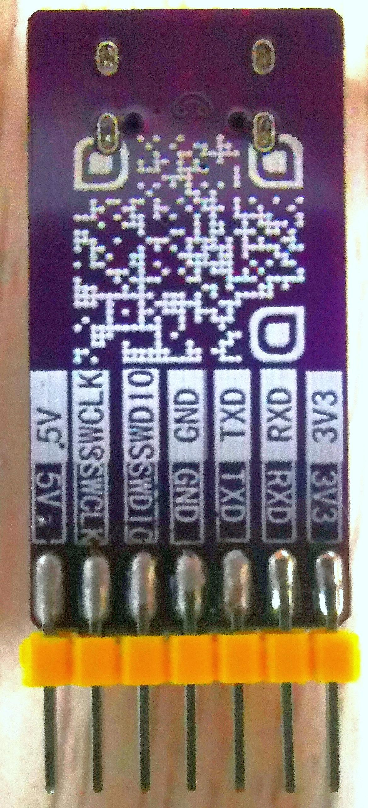</p><h2 data-lake-id="LXgsH" id="LXgsH"><span data-lake-id="u18202410" id="u18202410">使用说明（重要）</span></h2><ol list="uac4cfc8b"><li data-lake-id="u8e9081bc" fid="uf79ea444" id="u8e9081bc"><span data-lake-id="u41f83353" id="u41f83353">先焊接2x5Pin烧录排针</span></li><li data-lake-id="u8d0da0a1" fid="uf79ea444" id="u8d0da0a1"><span class="lake-fontsize-12" data-lake-id="u6fc986fa" id="u6fc986fa">再焊接2x20Pin开发排针，排针一定要焊在</span><strong><span class="lake-fontsize-16" data-lake-id="u07cd0f46" id="u07cd0f46" style="color: #DF2A3F">背面</span></strong><strong><span class="lake-fontsize-12" data-lake-id="ud1becad0" id="ud1becad0" style="color: #DF2A3F">，看清楚再焊，别焊错!</span></strong></li><li data-lake-id="u168ca889" fid="uf79ea444" id="u168ca889"><span class="lake-fontsize-12" data-lake-id="ue2904dad" id="ue2904dad">烧录器和开发板采用杜邦线连接</span></li><li data-lake-id="u39776c8b" fid="uf79ea444" id="u39776c8b"><span data-lake-id="ua42a9a4c" id="ua42a9a4c">6Pin的杜邦线连开发板对应关系如下</span></li></ol><ol data-lake-indent="1" list="uac4cfc8b"><li data-lake-id="u49b7930d" fid="uf79ea444" id="u49b7930d"><span data-lake-id="u67c64ee6" id="u67c64ee6">RXD 接 U0T  (USART0_TX)</span></li><li data-lake-id="u4209b4d2" fid="uf79ea444" id="u4209b4d2"><span data-lake-id="u411f24d3" id="u411f24d3">TXD 接 U0R (USART0_RX)</span></li><li data-lake-id="uf1b95e77" fid="uf79ea444" id="uf1b95e77"><span data-lake-id="uab7f6a17" id="uab7f6a17">GND 接 GND</span></li><li data-lake-id="uc6462de2" fid="uf79ea444" id="uc6462de2"><span data-lake-id="u4edbf3dc" id="u4edbf3dc">SWDIO 接 DIO</span></li><li data-lake-id="u5efec44c" fid="uf79ea444" id="u5efec44c"><span data-lake-id="u8fa9f9f3" id="u8fa9f9f3">SWCLK 接 CLK</span></li><li data-lake-id="ub5ab5d8b" fid="uf79ea444" id="ub5ab5d8b"><span data-lake-id="u65dc9020" id="u65dc9020">5V 接 5V0</span></li></ol><p data-lake-id="ub22d130b" id="ub22d130b" style="text-indent: 2em">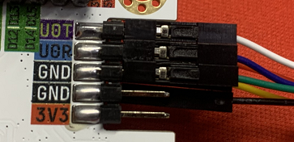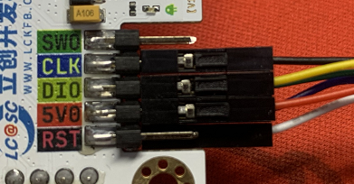</p><p data-lake-id="u46495854" id="u46495854" style="text-indent: 2em"></p><p data-lake-id="u2a4ab02e" id="u2a4ab02e" style="text-indent: 2em"><span data-lake-id="u1f9a4160" id="u1f9a4160">焊接建议：</span></p><p data-lake-id="u1aebe650" id="u1aebe650" style="text-indent: 2em">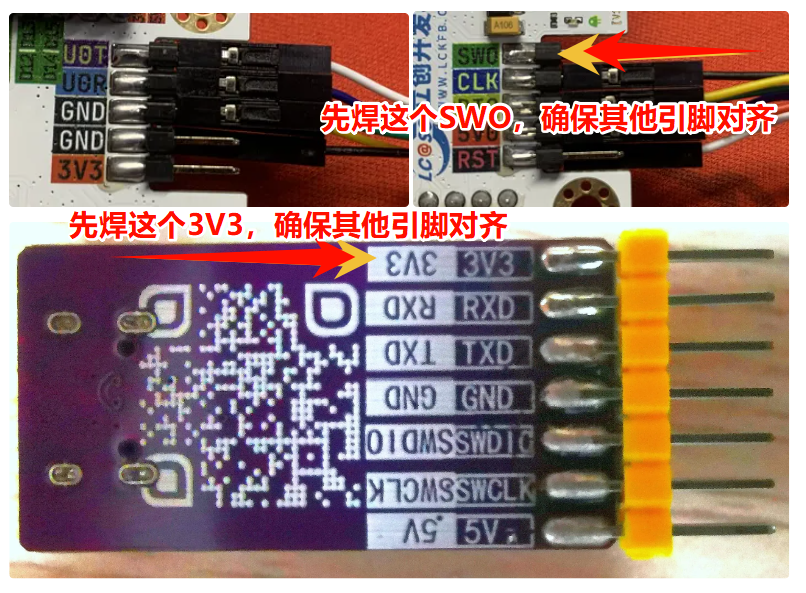</p><ol list="uac4cfc8b" start="5"><li data-lake-id="u344a28de" fid="uf79ea444" id="u344a28de"><strong><span class="lake-fontsize-16" data-lake-id="u89459f67" id="u89459f67" style="color: #DF2A3F">重要！！！不要</span></strong><strong><span class="lake-fontsize-12" data-lake-id="udf79afe5" id="udf79afe5" style="color: #DF2A3F">把开发板放到金属物上方（笔记本外壳，镊子，金属支架等）</span></strong><span data-lake-id="u49344e71" id="u49344e71">，否则上电后</span><strong><span class="lake-fontsize-16" data-lake-id="u6a07d0a4" id="u6a07d0a4" style="color: #DF2A3F">会烧板子</span></strong><span class="lake-fontsize-12" data-lake-id="u45ba56ab" id="u45ba56ab" style="color: #DF2A3F">，</span><span class="lake-fontsize-12" data-lake-id="ud69ae553" id="ud69ae553" style="color: #000000">如有此情况，请自行购买，链接：</span><a class="yuque-card-link" href="https://lckfb.com/project/detail/lckfb-lspi-skystar-gd32f407vet6-lite?param=baseInfo" rel="noopener noreferrer" target="_blank">bookmarkInline：bookmarkInline</a></li></ol><p data-lake-id="ud42ed21a" id="ud42ed21a"><strong><span class="lake-fontsize-12" data-lake-id="u008ead54" id="u008ead54">​</span></strong><br/></p><p data-lake-id="uaab1e724" id="uaab1e724"><strong><span class="lake-fontsize-12" data-lake-id="udd0f23ed" id="udd0f23ed">如果不清楚焊接成什么样，先看盯着这样图看1分钟！：</span></strong></p><p data-lake-id="ua531f3e4" id="ua531f3e4">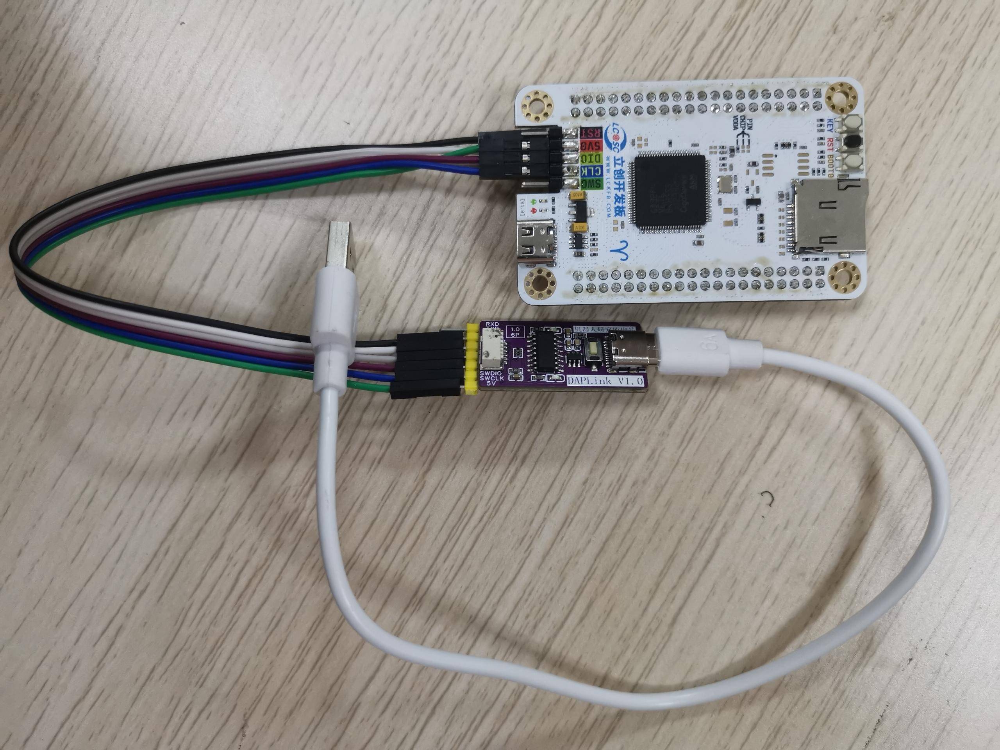</p><h2 data-lake-id="fjf44" id="fjf44"><span data-lake-id="u88b2d643" id="u88b2d643">参数</span></h2><h3 data-lake-id="HcYm6" id="HcYm6"><span data-lake-id="u9b65c602" id="u9b65c602">开发板资源、尺寸标注图</span></h3><p data-lake-id="u6c7d8f4b" id="u6c7d8f4b">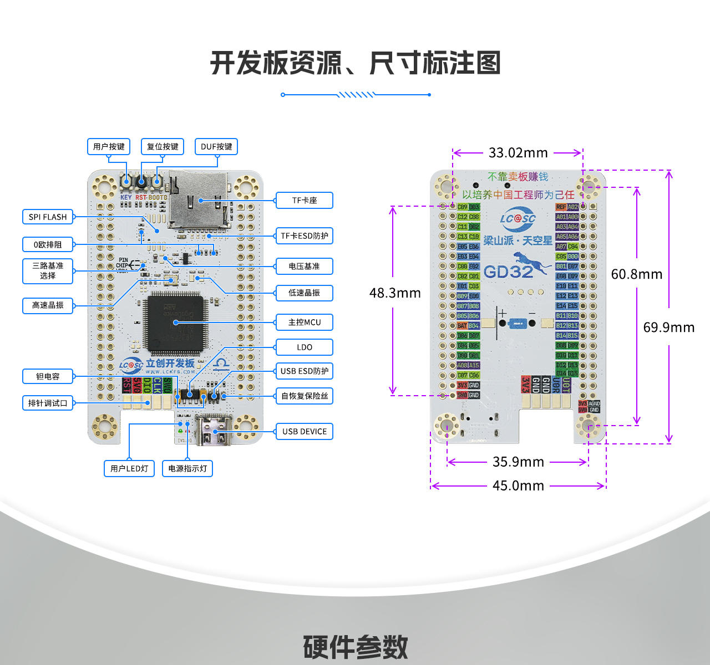</p><p data-lake-id="u956456c6" id="u956456c6"><br/></p><h3 data-lake-id="g3H8a" id="g3H8a"><span data-lake-id="u7e77903a" id="u7e77903a">硬件参数</span></h3><p data-lake-id="uf7fe6d0f" id="uf7fe6d0f">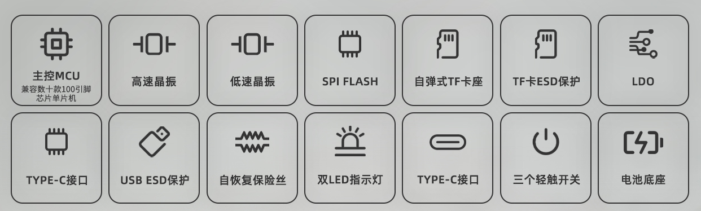</p><p data-lake-id="ud73bf1f5" id="ud73bf1f5"><br/></p><h3 data-lake-id="L3Xk4" id="L3Xk4"><span data-lake-id="ub9a2179b" id="ub9a2179b">引脚定义</span></h3><p data-lake-id="ua526c44f" id="ua526c44f"><br/></p><p data-lake-id="u03b51cc0" id="u03b51cc0">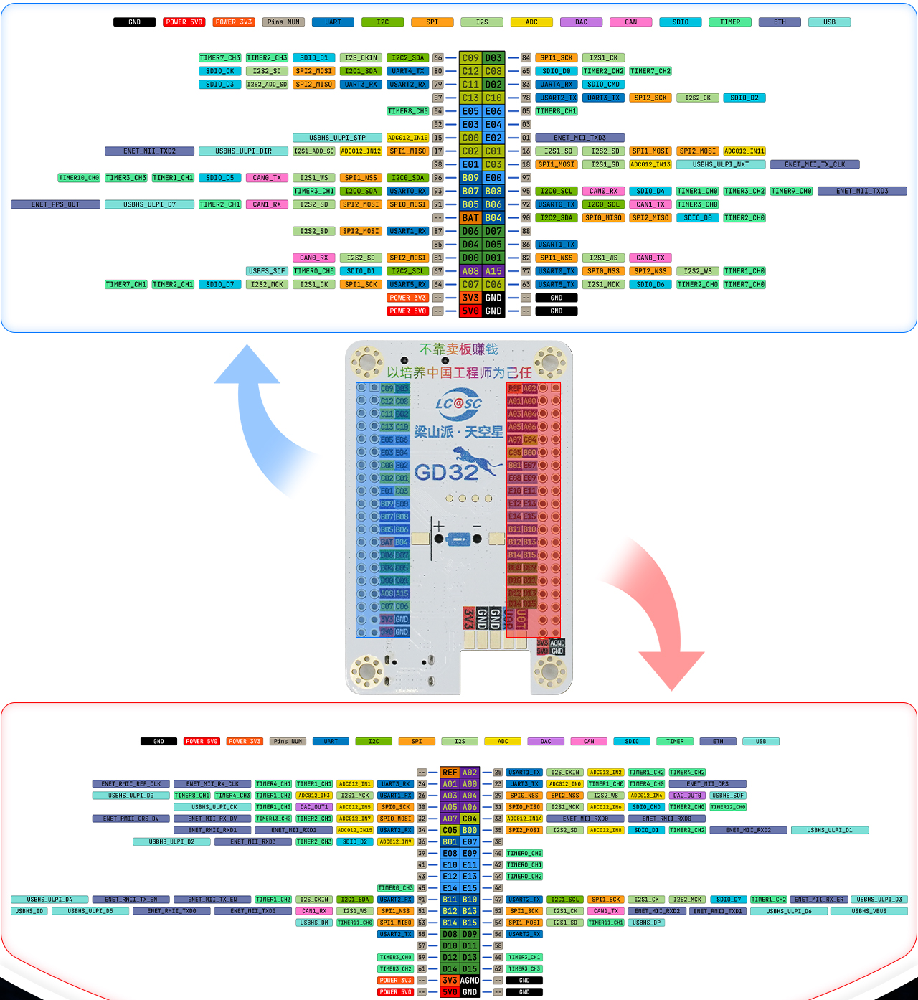</p><h3 data-lake-id="rEVJk" id="rEVJk"><span data-lake-id="ude492661" id="ude492661">设计图纸</span></h3><p data-lake-id="u3df8f28d" id="u3df8f28d"><a data-lake-id="u04ce80f6" href="https://pro.lceda.cn/editor#id=1949206d8e694271bd8ab6f068e260c2" id="u04ce80f6" rel="noopener noreferrer" target="_blank"><span data-lake-id="ue11c5342" id="ue11c5342">https://pro.lceda.cn/editor#id=1949206d8e694271bd8ab6f068e260c2</span></a></p><h2 data-lake-id="C1gXz" id="C1gXz"><span data-lake-id="ude0a35fa" id="ude0a35fa">GD32F407</span></h2><p data-lake-id="uf7663221" id="uf7663221" style="text-indent: 2em"><span class="lake-fontsize-12" data-lake-id="ua267f4ef" id="ua267f4ef" style="color: rgb(0,0,0)">GD32F4xx系列器件是基于Arm</span><sup><span data-lake-id="ub011cff9" id="ub011cff9">®</span></sup><span class="lake-fontsize-12" data-lake-id="ufa2caa01" id="ufa2caa01" style="color: rgb(0,0,0)"> Cortex</span><sup><span data-lake-id="uc00b25a5" id="uc00b25a5">®</span></sup><span class="lake-fontsize-12" data-lake-id="u1ec24037" id="u1ec24037" style="color: rgb(0,0,0)">-M4处理器的32位通用微控制器。存储器的组织 </span></p><p data-lake-id="ue3260fc8" id="ue3260fc8"><span class="lake-fontsize-12" data-lake-id="u7ab2fd03" id="u7ab2fd03" style="color: rgb(0,0,0)">采用了哈佛结构，预先定义的存储器映射和高达4 GB的存储空间，充分保证了系统的灵活性和可扩展性</span></p><p data-lake-id="uefe28015" id="uefe28015"><strong><span class="lake-fontsize-12" data-lake-id="u7efdd60a" id="u7efdd60a" style="color: rgb(0,0,0)">GD32F405/407系列</span></strong></p><ul list="u6b1948c8"><li data-lake-id="u24214f50" fid="u8661e705" id="u24214f50"><span data-lake-id="ufa822f8f" id="ufa822f8f">GD32F405/407为Cortex</span><sup><span data-lake-id="u11789677" id="u11789677">®</span></sup><span data-lake-id="uad138d5b" id="uad138d5b">-M4互联型</span></li><li data-lake-id="u4b8c60cf" fid="u8661e705" id="u4b8c60cf"><span data-lake-id="u60389cb8" id="u60389cb8">512K~3072K Flash，192K SRAM</span></li><li data-lake-id="uacdfedc4" fid="u8661e705" id="uacdfedc4"><span data-lake-id="u4ed39f6e" id="u4ed39f6e">高达168MHz，支持FPU</span></li><li data-lake-id="uca234887" fid="u8661e705" id="uca234887"><span data-lake-id="uaf1d1e9d" id="uaf1d1e9d">2.6~3.6V供电，5V容忍I/O</span></li><li data-lake-id="u53f388b5" fid="u8661e705" id="u53f388b5"><span data-lake-id="u2b03b9c9" id="u2b03b9c9">-40℃~85 ℃工业级温度范围</span></li><li data-lake-id="u7c4130b3" fid="u8661e705" id="u7c4130b3"><span data-lake-id="ueea69d44" id="ueea69d44">全系列硬件管脚及软件兼容</span></li></ul><p data-lake-id="ue4dc6dc7" id="ue4dc6dc7"><span data-lake-id="u1ceac4bc" id="u1ceac4bc">与GD32F403相比：</span></p><ul list="u5a24d9c1"><li data-lake-id="ud6f2cabc" fid="uc45f3d41" id="ud6f2cabc"><span data-lake-id="u09661076" id="u09661076">软硬件不兼容</span></li><li data-lake-id="u38e49424" fid="uc45f3d41" id="u38e49424"><span data-lake-id="u04412ad3" id="u04412ad3">定时器：增加了2个32位通用定时器</span></li><li data-lake-id="u3ccc3de7" fid="uc45f3d41" id="u3ccc3de7"><span data-lake-id="ua3fe5f8d" id="ua3fe5f8d">通信模块：增加了1个USART、1个USBHS、1个Camera、1个ENET(405无该模块)</span></li></ul><p data-lake-id="u3d7b7cf8" id="u3d7b7cf8">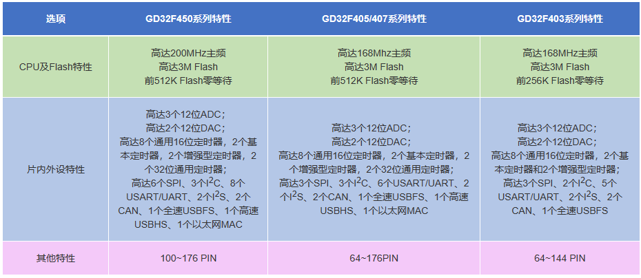</p><p data-lake-id="u87b758bd" id="u87b758bd"><span class="lake-fontsize-12" data-lake-id="u8a1416ee" id="u8a1416ee">​</span><br/></p><p data-lake-id="u04949d6f" id="u04949d6f"><strong><span class="lake-fontsize-12" data-lake-id="u40789dbf" id="u40789dbf">型号表</span></strong></p><p data-lake-id="uabfed25b" id="uabfed25b">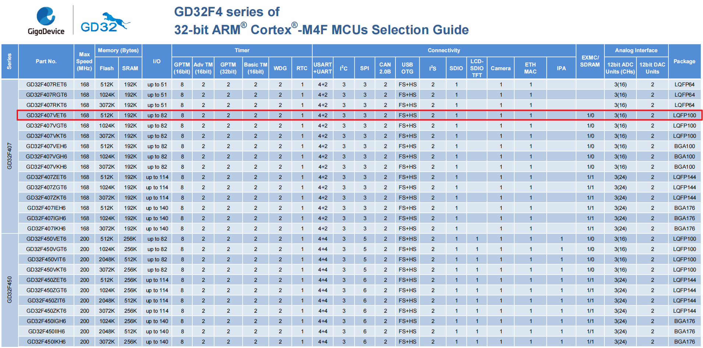</p><p data-lake-id="u1a020868" id="u1a020868"><a data-lake-id="u3fc31d5e" href="https://baijiahao.baidu.com/s?id=1758425738062892860&amp;wfr=spider&amp;for=pc" id="u3fc31d5e" rel="noopener noreferrer" target="_blank"><span data-lake-id="u830f9753" id="u830f9753">https://baijiahao.baidu.com/s?id=1758425738062892860&amp;wfr=spider&amp;for=pc</span></a></p><h2 data-lake-id="B7NKG" id="B7NKG"><span data-lake-id="u5ffe043f" id="u5ffe043f">天空星原理图</span></h2><a class="yuque-card-link" href="https://www.yuque.com/attachments/yuque/0/2024/pdf/27903758/1715514986018-3f778ff7-89d0-4bda-bd9a-0454264a0782.pdf">localdoc：SCH_立创梁山派·天空星开发板原理图_2024-05-12.pdf</a><p data-lake-id="u622aa2d9" id="u622aa2d9"><span data-lake-id="u6bfef3ff" id="u6bfef3ff">引脚排针图：</span></p><p data-lake-id="u73ab55d6" id="u73ab55d6">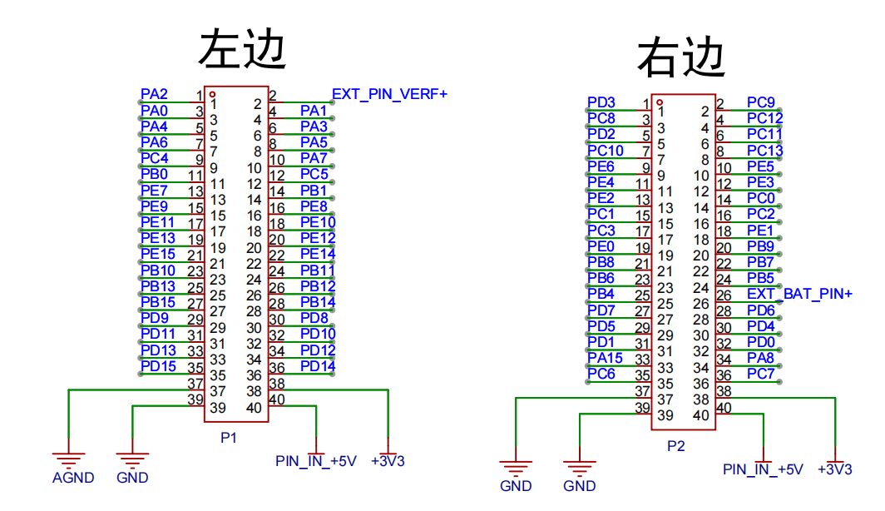</p><h2 data-lake-id="NYyYS" id="NYyYS"><span data-lake-id="ubf09cfd6" id="ubf09cfd6">烧录器准备</span></h2><p data-lake-id="ub8874a5d" id="ub8874a5d"><span data-lake-id="u11bbc572" id="u11bbc572">安装软件</span></p><p data-lake-id="u3b7ebb83" id="u3b7ebb83"></p><p data-lake-id="u939ebf7b" id="u939ebf7b"><span data-lake-id="u1d14f464" id="u1d14f464">选择CH55x系列芯片</span></p><p data-lake-id="ubd62b1ec" id="ubd62b1ec">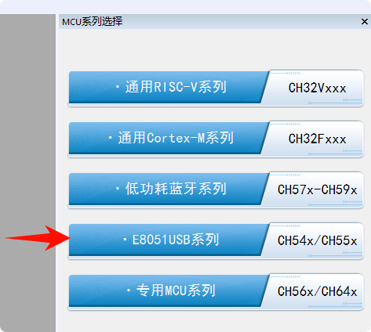</p><p data-lake-id="u2db6e03c" id="u2db6e03c"><span data-lake-id="u595c6da1" id="u595c6da1">配置芯片</span></p><p data-lake-id="u4fda1f58" id="u4fda1f58">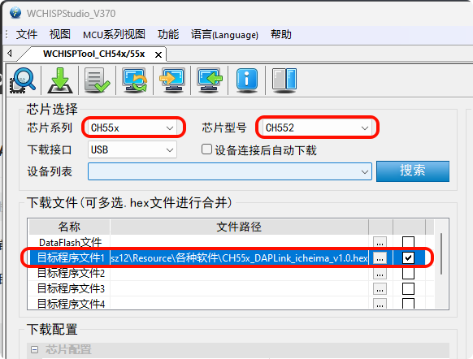</p><p data-lake-id="u8d48df7f" id="u8d48df7f"><span data-lake-id="uc5e913b7" id="uc5e913b7">按住烧录器的白色按钮，连接Type-C</span></p><p data-lake-id="u454488df" id="u454488df">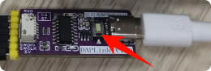</p><p data-lake-id="u91550b27" id="u91550b27"><span data-lake-id="u7b7f3224" id="u7b7f3224">此时可见设备CH55x，点击下方的【下载】按钮</span></p><p data-lake-id="uc3ee9bec" id="uc3ee9bec">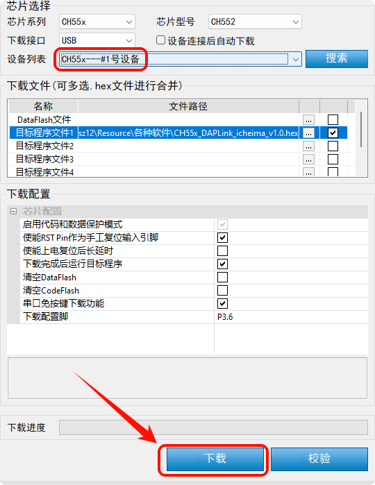</p><p data-lake-id="u11940208" id="u11940208"><span data-lake-id="u90b64eb9" id="u90b64eb9">看到右侧日志提示成功，重新拔插即可使用：</span></p><p data-lake-id="u0b6639e2" id="u0b6639e2">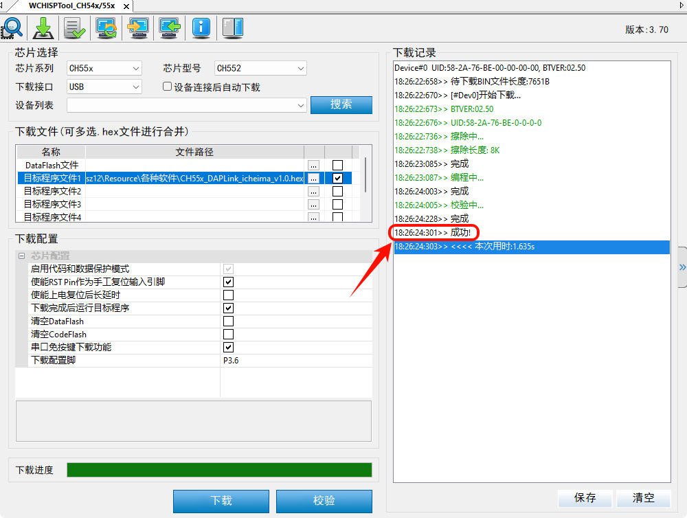</p><h2 data-lake-id="N0lHu" id="N0lHu"><span data-lake-id="ud0b23367" id="ud0b23367">开发学习资料</span></h2><p data-lake-id="u41ae2a83" id="u41ae2a83"><a class="yuque-card-link" href="https://docs.qq.com/sheet/DY251S2x3aWxKUXdD" rel="noopener noreferrer" target="_blank">bookmarkInline：bookmarkInline</a></p><p data-lake-id="ua155775d" id="ua155775d"><strong><span data-lake-id="uc343857b" id="uc343857b">兆易创新资料：</span></strong></p><p data-lake-id="u367a8ab0" id="u367a8ab0"><a data-lake-id="u0f567258" href="https://www.gd32mcu.com/cn/download/7?kw=" id="u0f567258" rel="noopener noreferrer" target="_blank"><strong><span data-lake-id="u48c8f837" id="u48c8f837">https://www.gd32mcu.com/cn/download/7?kw=</span></strong></a></p><p data-lake-id="uc4de85e6" id="uc4de85e6"><strong><span data-lake-id="u3940d1a1" id="u3940d1a1">天空星：</span></strong></p><p data-lake-id="ubb1ae792" id="ubb1ae792"><a class="yuque-card-link" href="https://wiki.lckfb.com/zh-hans/tkx/tkx-gd32f407vet6/beginner/" rel="noopener noreferrer" target="_blank">bookmarkInline：bookmarkInline</a></p><p data-lake-id="ue9f44c64" id="ue9f44c64"><a class="yuque-card-link" href="https://lceda001.feishu.cn/wiki/D4cqwUkiTi6723knO2cczSThnYb" rel="noopener noreferrer" target="_blank">bookmarkInline：bookmarkInline</a></p><p data-lake-id="ud7b1e4b4" id="ud7b1e4b4"><a class="yuque-card-link" href="https://lceda001.feishu.cn/wiki/D4cqwUkiTi6723knO2cczSThnYb" rel="noopener noreferrer" target="_blank">bookmarkInline：bookmarkInline</a></p><p data-lake-id="uc66dfab5" id="uc66dfab5"><a class="yuque-card-link" href="https://lceda001.feishu.cn/wiki/Zawdwg0laig3Qnk2XuxcKrQRn2g" rel="noopener noreferrer" target="_blank">bookmarkInline：bookmarkInline</a></p><p data-lake-id="u80cce84e" id="u80cce84e"><a class="yuque-card-link" href="https://lceda001.feishu.cn/wiki/GySKwn3jMitXbAkhX0GcDjtBnQd" rel="noopener noreferrer" target="_blank">bookmarkInline：bookmarkInline</a></p><p data-lake-id="ube2e0348" id="ube2e0348"><a class="yuque-card-link" href="https://oshwhub.com/li-chuang-kai-fa-ban/li-chuang-liang-shan-pai-tian-kong-xing-kai-fa-ban" rel="noopener noreferrer" target="_blank">bookmarkInline：bookmarkInline</a></p><p data-lake-id="u4e4e6037" id="u4e4e6037"><a class="yuque-card-link" href="https://docs.qq.com/sheet/DY3poTE9mYk9ZbnpG?tab=000005" rel="noopener noreferrer" target="_blank">bookmarkInline：bookmarkInline</a></p><p data-lake-id="uce702f12" id="uce702f12"><br/></p><p data-lake-id="u485505f7" id="u485505f7"><strong><span data-lake-id="u966a8f64" id="u966a8f64">梁山派：</span></strong></p><p data-lake-id="u0acd4dba" id="u0acd4dba"><a class="yuque-card-link" href="https://lceda001.feishu.cn/wiki/JjcewPQZ6iuQSTkD3eQcIFgfnSg" rel="noopener noreferrer" target="_blank">bookmarkInline：bookmarkInline</a></p><p data-lake-id="u65c77628" id="u65c77628"><a class="yuque-card-link" href="https://lceda001.feishu.cn/wiki/JNvYwEU5SiGldFkNcxncYXhZnZc" rel="noopener noreferrer" target="_blank">bookmarkInline：bookmarkInline</a></p><p data-lake-id="ua8422c6d" id="ua8422c6d"><a class="yuque-card-link" href="https://lceda001.feishu.cn/wiki/A2qPwUQoxi8O2ukHcr4cnAuDnje" rel="noopener noreferrer" target="_blank">bookmarkInline：bookmarkInline</a></p><p data-lake-id="u39b5be36" id="u39b5be36"><a class="yuque-card-link" href="https://lckfb.com/docs/lckfb_lspi/#/" rel="noopener noreferrer" target="_blank">bookmarkInline：bookmarkInline</a></p><p data-lake-id="u2f99485d" id="u2f99485d"><a class="yuque-card-link" href="https://lceda001.feishu.cn/docx/OPBSdsgOTorG8PxGffXcHEZRn8g?302from=wiki" rel="noopener noreferrer" target="_blank">bookmarkInline：bookmarkInline</a></p>